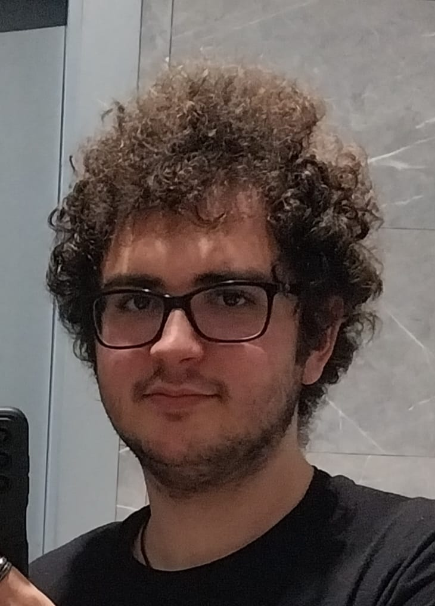

Estudiant de Física · Músic · Monitor de Lleure · Tècnic de So

El meu nom és Daniel Ayllón Aranda. Soc un estudiant de Física a la Universitat de Barcelona, nascut el 10 de juliol de 2005 a Martorell i resident a Castellbisbal. Des de petit, la curiositat pel funcionament del món ha estat la meva guia: per quin motiu les estrelles brillen, com es propaga el so d'una guitarra o per què un imant atrau el ferro.
A part dels estudis científics, soc músic i durant cinc anys vaig encapçalar un projecte de teatre i música al meu Institut, assumint des del primer dia totes les responsabilitats: composició, direcció d'escena, gestió tècnica i formació dels participants. Aquella experiència va forjar en mi la capacitat d'organitzar equips, mantenir la calma sota pressió i fer que les coses surtin bé fins a l'últim detall.
Una de les meves grans passions són els infants. M'encanta acompanyar-los en el seu creixement, adaptar el llenguatge a cada edat i convertir conceptes complexos en jocs i descobertes. He treballat amb nens i nenes en contextos molt diversos: colònies, casals, planetari, classes de repàs i tallers de ciència. La formació especialitzada en TDA, TEA i Altes Capacitats m'ha donat eines per atendre la diversitat amb rigor i sensibilitat.
Experiències variades que combinen la meva passió per la ciència, la música, el teatre i el treball amb infants.
Una combinació poc habitual de competències tècniques, artístiques i pedagògiques, forjada a través de més de sis anys d'experiència pràctica en entorns molt diversos.
Descarrega el meu CV en format PDF o explora les seccions d'aquesta web.
Estic disponible per a noves oportunitats. No dubtis a escriure'm!
💬 Tens preguntes? Utilitza el xatbot de la cantonada inferior dreta per resoldre dubtes sobre l'experiència i disponibilitat de'n Daniel.
⚙️ Cal configurar Formspree. Consulta el README.